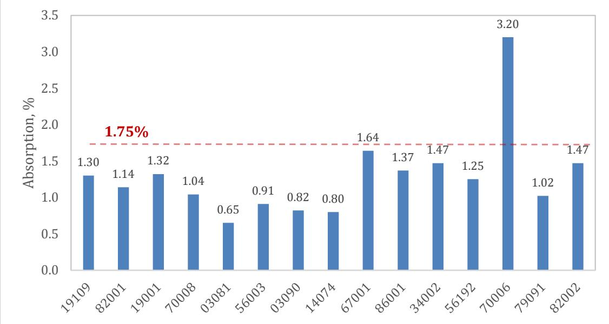
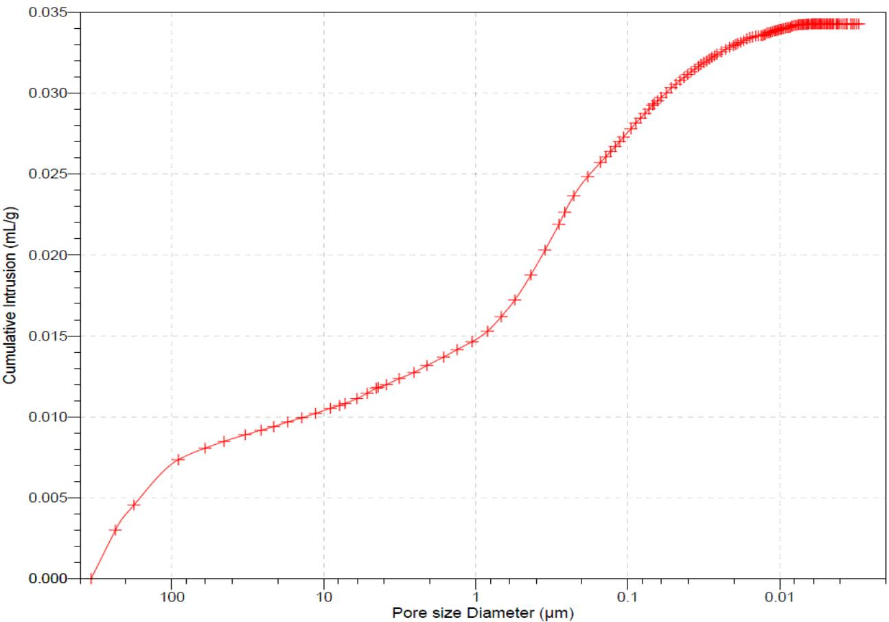
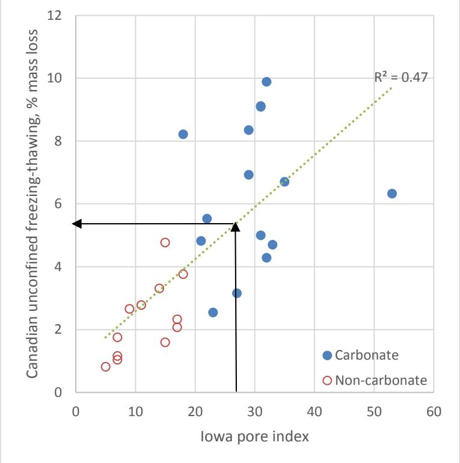
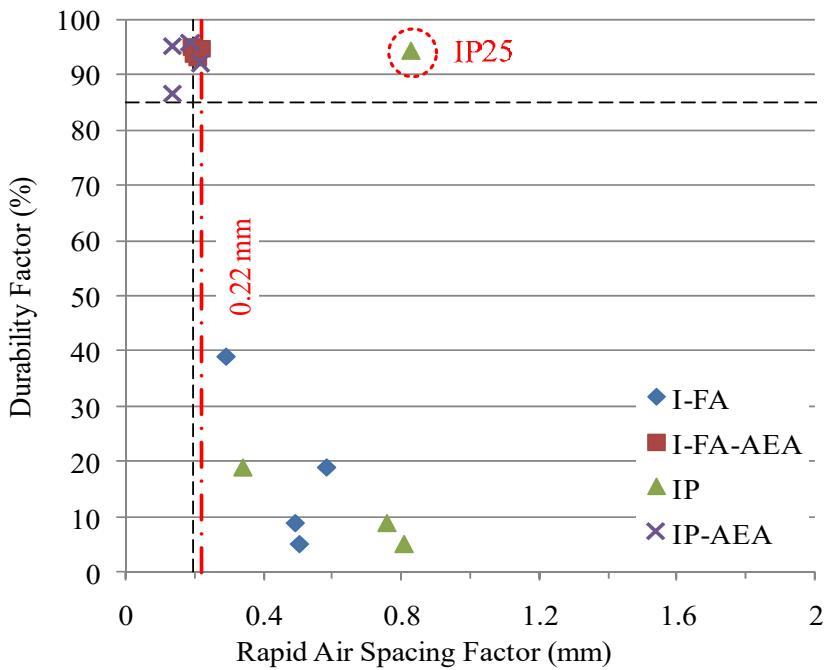
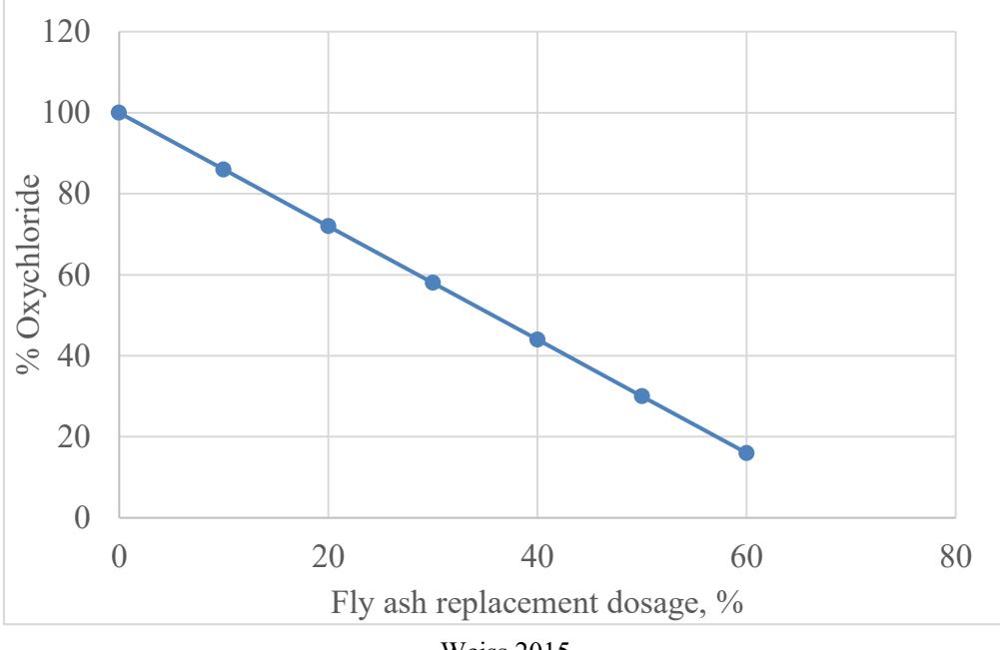
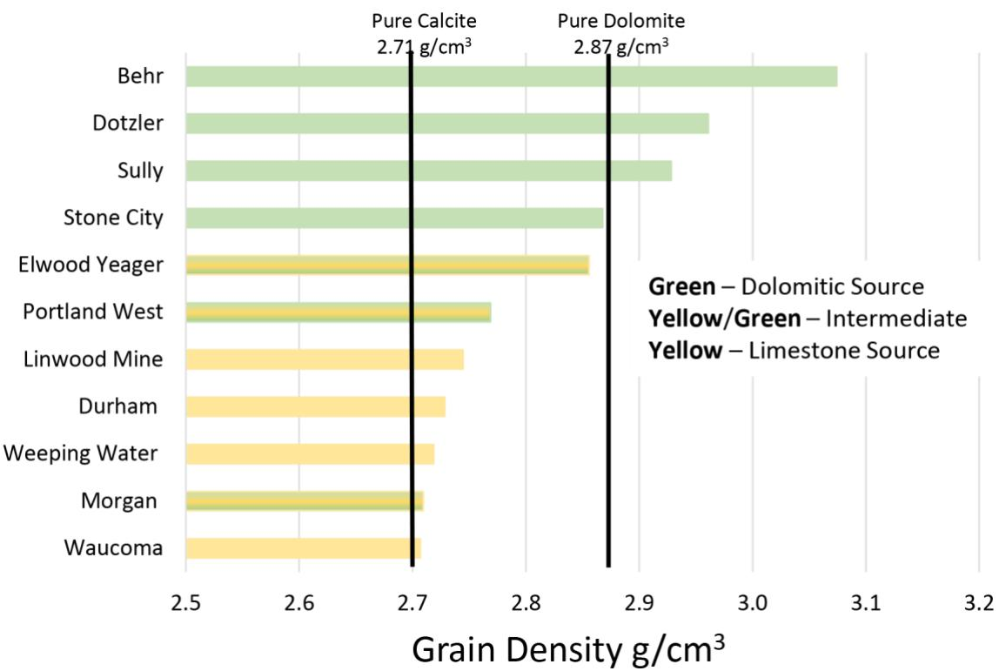

Carbonate Aggregate
Carbonate Aggregate is a specific type of Aggregates derived from sedimentary rocks such as limestone and dolomite [1]. This origin distinguishes them from siliceous aggregates, which are typically sourced from igneous or metamorphic rocks like granite and quartzite [4]. While these siliceous materials generally perform well in freezing-thawing conditions, carbonate aggregates can be problematic due to their susceptibility to durability issues when exposed to deicing salts [1]. Traditionally limited by specifications due to potential durability concerns, recent research suggests that pore structure characteristics may be more relevant than carbonate content alone.
Sources (14)
Current MnDOT Specifications and Limitations
The MnDOT specification limits the carbonate content of concrete aggregates to 30% (by weight), though this current 30% carbonate content limit may be unnecessarily restrictive for some aggregates. While the traditional acceptance criterion is a 1.75% maximum absorption, research has found that absorption alone is an insufficient acceptance criterion [1]. Consequently, there is a recommended reevaluation of acceptance criteria based on durability testing rather than composition alone.

Water Absorption of the Bulk Aggregates Tested [1]Pore Structure Analysis and the Iowa Pore Index Test
The Iowa pore index test operates at a constant pressure of 35 psi (240 kPa) to intrude water into oven-dried crushed carbonate samples, effectively measuring volumes in the 0.1–100 µm range for the primary pore index (PPI) and the 0.01–1 µm range for the secondary pore index (SPI) [1]. Volume readings are taken at one minute for macropores and fifteen minutes for micropores [2]. This rapid, nondestructive method has been adopted as an AASHTO standard (AASHTO TP 120-16) to replace mercury porosimetry in petrophysical laboratories [2]. The transition point between macropore and micropore intrusion is sample-dependent, varying with lithological properties such as porosity, pore connectivity, and pore-throat sizes when tested at variable pressures of 15, 35, and 60 psi [3]. Because pore structure rather than composition may better predict durability performance, it is noted that carbonate aggregates generally exhibited finer pore structures than non-carbonate aggregates [1]. Carbonate aggregates typically exhibit a pore size distribution hump in the 0.1–1 µm range, which is significant because water in pores of this specific size range has difficulty escaping during freeze-thaw cycles [1]. Furthermore, aggregates associated with D-cracking typically exhibit a predominance of pore sizes ranging from 0.04 to 0.20 µm in diameter, which are difficult for water to escape during freeze-thaw cycles [4].

Cumulative Intrusion versus Pore Size (Specimen 56192-Carbonate) [1]An Expected Durability Factor (EDF) calculated from pore structure parameters can predict D-cracking susceptibility, with aggregates exhibiting an EDF below approximately 40 being prone to distress [1]. An Iowa pore index value of 27 serves as a threshold indicating an aggregate will not experience D-cracking, corresponding to mass loss limits of 8% for ASTM C666 conditioning tests and 5% for CSA A23.2-24A tests [4]. To further analyze these properties, the Iowa pore index test is combined with x-ray diffraction (XRD) to measure dolomite mineral structure via peak shift and x-ray fluorescence (XRF) to determine the calcite-to-dolomite ratio and clay content using alumina; this multi-method approach effectively predicts aggregate performance in portland cement concrete by linking geological factors like depositional environment and texture to pore system characteristics [2]. Regarding geological formation, framework pores form as intercrystalline spaces within precipitated interlocking calcite crystals or as primary vugs in reef settings where rapid autochthonous carbonate accumulation creates imperfectly formed frameworks [3]. Dolomitization typically increases porosity by approximately 12% based on unit cell volume differences between calcite and dolomite, though the process may also erase original depositional textures making lithological interpretation difficult [3]. Finally, in pervious concrete structures, the average pore sizes typically range from 2 mm to 8 mm, defining the primary flow pathways for water transport [5], and increasing aggregate size enlarges pore dimensions, thereby directly enhancing the hydraulic conductivity and permeability of the pervious concrete structure [5].

CSA A23.2-24A versus Iowa pore index [4]Relationship Between Carbonate Content and Durability
Across 15 Minnesota aggregate sources, carbonate content ranges from 2.4% to 98.7% [1], though there is no significant relationship between this carbonate content and pore structure parameters (PPI, SPI) [1]. Furthermore, some low-carbonate aggregates had absorption exceeding the 1.75% limit [1]. Regarding durability, mixtures utilizing single-sized limestone aggregates are particularly susceptible to internal aggregate deterioration during freeze-thaw cycles, whereas river gravel mixes tend to fail via cement paste matrix unraveling [6]. Because a small quantity (approximately 15%) of flawed aggregate within a heterogeneous source can cause D-cracking in concrete, it is important to assess all rock types even when present in minor relative abundances [3].
 Frost Damage Associated with Concrete Aggregate: D-cracking at a Pavement Joint Intersection (left) and Fractured Carbonate Aggregate (right) [1]
Frost Damage Associated with Concrete Aggregate: D-cracking at a Pavement Joint Intersection (left) and Fractured Carbonate Aggregate (right) [1]
Petrographic Failure Mechanisms in Carbonate Concrete
Petrographic analysis of carbonate aggregates in distressed pavements reveals that fractures frequently initiate at the aggregate-paste interface, with some propagating into the cement paste while others terminate within the aggregate particles [7]. Petrographic examination further distinguishes between paste-related failures, characterized by map cracking and fractures extending into the cement matrix, and aggregate-related failures involving internal particle fracturing [7]. In specific pavement cores, crushed carbonate coarse aggregates were observed to be relatively hard, sound, and durable compared to other aggregate types like blast furnace slag [8]. Concrete with limestone aggregates demonstrates significantly higher durability than gravel mixes in freeze-thaw testing, primarily because porous materials in gravel contribute to increased popout formation rather than intrinsic mineral differences [9]. Regarding material characteristics, limestones characterized by a sparite matrix, peloidal grains, and a low matrix-to-allochem ratio (grainy texture) demonstrate superior performance in road construction compared to those with a micrite matrix and skeletal grains; similarly, dolostones with fine to coarse grains and porous intercrystalline areas are more desirable than those with very fine grains and tightly interlocking crystal mosaics [2].
 (b). Core-determined concrete pavement condition showing type of coarse aggregate [8]
(b). Core-determined concrete pavement condition showing type of coarse aggregate [8]
Freeze-thaw performance is heavily influenced by particle size and pore structure, as reducing maximum aggregate size helps limit frost damage because smaller particles allow unfrozen water to be expelled quickly without developing damaging internal pressure during freezing conditions [4]. Conversely, intermediate-permeability aggregates containing significant portions of small pores (≤500 nanometers) are prone to saturation via capillary forces, where trapped water develops internal pressure high enough to fracture the particle during freezing [4]. Crushed carbonate aggregates composed of oolitic and fossiliferous limestone can exhibit concentrated sub-vertical microcracks within the particle itself, occurring up to 12mm from spalled surfaces during freeze-thaw distress [9]. In freeze-thaw environments with salt exposure, the interfacial transition zone (ITZ) around carbonate aggregates becomes a preferential pathway for chloride penetration, leading to localized salt accumulation and distress initiation at the aggregate-paste boundary [9]. Higher water-to-cement ratios in concrete containing carbonate aggregates lead to increased absorption and air permeability, resulting in greater salt accumulation around aggregate particles and a higher tendency for cracks to propagate around the aggregate rather than through it [9]. Furthermore, the formation potential of calcium oxychloride (CaOXY) increases significantly when portlandite (CH) content exceeds 1 g per 100 g powder, with each additional gram of CH resulting in a 2 to 4 g increase in CaOXY formation, a chemical reaction particularly relevant for carbonate aggregates exposed to deicing salts [10]. Secondary ettringite formation within air voids near distressed joints can significantly reduce effective air content, with measured entrained volume dropping from 4.9% to 2.9% and spacing factor decreasing to 0.013 inches within 25mm of the distress zone [9]. Finally, inadequate core consolidation is frequently observed in concrete containing carbonate aggregates, with porosity coefficients of variation exceeding 25% of expected values, a condition that often leads to honeycombing and high volumes of entrapped air, particularly when mixtures exhibit low workability or high water-to-cementitious material ratios [10].
 Cracks concentrated adjacent to the coarse aggregate in FG1 [9]
Cracks concentrated adjacent to the coarse aggregate in FG1 [9]
Non-Destructive Evaluation and Testing Methods
- Pore structure testing (Iowa Pore Index, MIP) provides additional quality information
- Bektas, F., Wang, K., & Ren, J. (2015). Carbonate Aggregate in Concrete: Evaluation of Iowa Pore Index Test and Mercury Intrusion Porosimetry Analysis. MnDOT Report MN/RC 2015-14.
GPR surveys at highway speeds (approximately 55 mph) can detect anomalies indicative of moisture gradients or variable support beneath concrete pavements, which correlate with distress patterns. [7]
 High-Resolution GPR Illustrating the Periodic Signal from the Base of US 63 [7]
High-Resolution GPR Illustrating the Periodic Signal from the Base of US 63 [7]
Surface resistivity testing indicates that limestone aggregate concretes with high fly ash replacement achieve low chloride ion penetrability classifications, with average resistivity values reaching 26.8 kohm-cm at 56 days for cast samples. [11]
 Averaged surface resistivity results of three mixes [11]
Averaged surface resistivity results of three mixes [11]
Aggregate Durability Ratings and Air Void Requirements
A combination of high specific gravity (>2.60) and low absorption (<1.75%) serves as an indicator for low SPI values, suggesting that these physical properties can be used to assess freeze-thaw durability performance [1]. Regarding service life, control sections using crushed limestone aggregates with Class 2 durability ratings are expected to exhibit distress after approximately 20 years of service, whereas higher-quality aggregates may remain sound for over 30 years [7]. For road construction, helium porosity thresholds define aggregate desirability, requiring limestones to have less than approximately 7% porosity and dolostones to exceed approximately 13%; furthermore, the critical pore-throat size range associated with durability is between 0.02 and 0.1 µm, where coarse aggregates with modal pore throat sizes above this range are preferred [2].
 Reprinted, with permission from “Influence of Physical Characteristics of Aggregates on Frost Resistance of Concrete.” Proceedings of the American Society for Testing Materials, 60, 1063–1079, copyright ASTM International, 100 Barr Harbor Drive, West Conshohocken, PA 19428. Figure 2.2. Degree of Saturation Attained by Different Aggregates at Various Humidities [1]
Reprinted, with permission from “Influence of Physical Characteristics of Aggregates on Frost Resistance of Concrete.” Proceedings of the American Society for Testing Materials, 60, 1063–1079, copyright ASTM International, 100 Barr Harbor Drive, West Conshohocken, PA 19428. Figure 2.2. Degree of Saturation Attained by Different Aggregates at Various Humidities [1]
Concrete containing limestone aggregates can achieve freeze-thaw durability without air entrainment if the water-to-binder ratio is sufficiently low (≤0.25), as the resulting very fine pores prevent pore water from freezing under ordinary ambient temperatures [12]. Specifically, the limiting water-to-binder ratio below which air entrainment is not required for good freeze-thaw durability is approximately 0.25 for concretes containing dolomitic limestone, silica fume, and Type I cement [12]. In such cases, concrete made with Type I cement and Class C fly ash requires a 28-day compressive strength of 70.7 MPa (10,246 psi) to be freeze-thaw durable without air entrainment, whereas concrete using IP blended cement requires 82 MPa (11,880 psi) [12]. To achieve a durability factor of at least 85% after freeze-thaw cycles, air entrainment effectiveness in carbonate aggregate concrete requires an air content greater than 6% and a spacing factor of 0.2 mm or less [12]. Air void structure parameters for limestone concrete, including specific surface and spacing factor, are critical predictors of freeze-thaw durability, as inadequate air structures can lead to marginal durability factors close to 85 percent even when total air content is sufficient [11].

Durability factor as a function of spacing factor, measured using the RapidAir [12]When exposed to deicing solutions, the correlation between concrete air content and scaling performance is generally poor, indicating that air void parameters alone do not reliably predict resistance to surface deterioration from chemical exposure [13]. However, increasing the air void spacing factor has been observed to reflect better scaling performance, a correlation that is more pronounced when evaluated using older test methods compared to newer protocols [13]. Additionally, the relationship between slag cement content and scaling resistance is less marked than previously reported, suggesting that aggregate mineralogy may play a more dominant role in deicer scaling behavior than supplementary cementitious materials alone [13].
Properties of Limestone in Pervious Concrete
The paste to combined aggregate voids volume ratio (Vpaste/Vvoids) serves as a critical design parameter for limestone concrete, with recommended ranges between 125 and 175 percent to ensure adequate workability and hardened properties [11]. Concrete mixtures utilizing limestone aggregates can be optimized using workability factor charts and Haystack Charts to evaluate gradation characteristics, where specific systems may fall into desirable zones for coarseness or sandy classifications [11]. Furthermore, limestone aggregate concrete containing high fly ash content (30 to 35 percent) demonstrates significantly reduced formation of calcium oxychloride, with measured values dropping from 30.5 percent in conventional mixes to 8.4 percent in modified mixtures [11]. Crushed carbonate aggregates can also provide internal curing benefits during the concrete’s hydration process if their pores are fully saturated, which promotes continued cement hydration beyond normal curing periods and reduces overall permeability [8].

Relationship between fly ash replacement dosage and oxychloride amount [11]In pervious concrete applications, dolomite is considered the optimal aggregate type due to its favorable performance characteristics [5], whereas crushed limestone aggregates exhibit lower abrasion resistance compared to river gravel, which directly influences the mix’s compressive strength and durability under freeze-thaw conditions [6]. Angular carbonate aggregates produce pervious concrete with lower density and higher void content compared to rounded aggregates, resulting in increased permeability but reduced compressive strength [5]; consequently, the permeability of pervious concrete typically ranges from 3 gal/ft²/min (0.2 cm/s) to 17 gal/ft²/min (1.2 cm/s), a parameter critical for hydrological design and stormwater management [5]. For structural design, the split tensile strength of pervious concrete containing carbonate aggregates is approximately 12% of its compressive strength [6]. Additionally, a modified mixing procedure involving the dry coating of aggregate with less than 5% cement significantly improves bond strength, causing failure to occur through the aggregate particle rather than at the paste-aggregate interface [6].
 Unit weight, strength, and permeability of pervious concrete mixtures [5]
Unit weight, strength, and permeability of pervious concrete mixtures [5]
Thermal and Physical Material Properties
Concrete containing limestone aggregates exhibits a lower coefficient of thermal expansion (CTE), typically around 5.69 microstrain/°F, compared to quartzite or dolomite mixes which range from 6.68 to 7.27 microstrain/°F [14]. The thermal diffusivity of concrete containing carbonate aggregates generally falls within the range of 0.003 to 0.006 m²/h (0.02 to 0.06 ft²/h), a value determined largely by the mineralogical characteristics of the coarse aggregate [14].
Furthermore, helium pycnometry reveals that limestone sources typically exhibit lower grain densities averaging 2.72 g/cm³, whereas dolomitic sources show elevated average densities of 2.94 g/cm³ due to impurities and secondary mineralization [3].

Grain density for 11 sample sources [3]Related Concepts
- Iowa Pore Index
- Mercury Intrusion Porosimetry
- Freeze-Thaw Durability
- D-Cracking
- Absorption (Aggregate)
- Specific Gravity (Aggregate)
- Aggregates
X-ray diffraction (XRD) and thermo-gravimetric analysis (TGA) are utilized to evaluate aggregate quality by determining grain size and identifying calcite-dolomite transitions within carbonate materials. [1]
References
- F. Bektas, K. Wang, and J. Ren, "Carbonate Aggregate in Concrete," Institute for Transportation, Ames, IA, 2015. [Online]. Available: https://www.intrans.iastate.edu/wp-content/uploads/2018/03/201514.pdf
- F. Hasiuk, M. F. A. Ridzuan, and P. Taylor, "Calibrating the Iowa Pore Index with Mercury Intrusion Porosimetry and Petrography," Institute for Transportation, Ames, IA, Rep. InTrans Project 15-553, 2017. [Online]. Available: https://www.intrans.iastate.edu/wp-content/uploads/2018/03/Iowa_pore_index_calibration_w_cvr.pdf
- J. F. Orso, IV and F. Hasiuk, "Calibrating the Iowa Pore Index with Mercury Intrusion Porosimetry and Petrography — Phase II," Geological and Atmospheric Sciences, Ames, IA, Rep. InTrans Project 15-553, 2019. [Online]. Available: https://www.cptechcenter.org/wp-content/uploads/2019/10/calibrating_Iowa_pore_index_phase_II_w_cvr.pdf
- F. Bektas, W. Cai, and K. Wang, "Aggregate Freezing-Thawing Performance Using the Iowa Pore Index," Center for Transportation Research and Education, Ames, IA, 2016. [Online]. Available: https://www.cptechcenter.org/wp-content/uploads/2018/03/aggregate_freezing-thawing_using_Iowa_pore_index_w_cvr.pdf
- S. K. Ong, K. Wang, Y. Ling, and G. Shi, "Pervious Concrete Physical Characteristics and Effectiveness in Stormwater Pollution Reduction," Institute for Transportation, Ames, IA, Rep. DTRT13-G-UTC37, 2016. [Online]. Available: https://www.intrans.iastate.edu/wp-content/uploads/2018/03/pervious_concrete_in_stormwater_pollution_reduction_w_cvr.pdf
- V. R. Schaefer, K. Wang, M. T. Suleiman, and J. T. Kevern, "Mix Design Development for Pervious Concrete in Cold Weather Climates," CTRE, Iowa State University, Ames, IA, 2006. [Online]. Available: https://www.perviouspavement.org/downloads/Iowa.pdf
- S. Schlorholtz, B. Dawson, and M. Scott, "Development of In Situ Detection Methods for Materials-Related Distress (MRD) in Concrete Pavements: Phase 1," Center for Portland Cement Concrete Pavement Technology, Iowa State University, Ames, IA, Rep. CTRE 00-96, 2003. [Online]. Available: https://www.intrans.iastate.edu/wp-content/uploads/2018/03/mrd.pdf
- J. Grove, F. Bektas, and H. Gieselman, "Southeast Michigan Local Road Concrete Pavement Durability Study," National Concrete Pavement Technology Center, Ames, IA, 2006. [Online]. Available: https://www.cptechcenter.org/wp-content/uploads/2018/03/mi_pavement_durability.pdf
- P. Taylor, L. Sutter, and J. Weiss, "Investigation of Deterioration of Joints in Concrete Pavements," National Concrete Pavement Technology Center, Ames, IA, Rep. TPF-5(224), 2012. [Online]. Available: https://www.intrans.iastate.edu/wp-content/uploads/2018/03/joint_deterioration_penetrating_sealers_field_study_w_cvr.pdf
- J. Gross, J. Weiss, T. Ley, P. Taylor, N. Weitzel, T. Van Dam, G. Smith, and C. Jones, "Performance-Engineered Concrete Paving Mixtures," National Concrete Pavement Technology Center, Iowa State University, Ames, IA, Rep. TPF-5(368), 2022. [Online]. Available: https://www.intrans.iastate.edu/wp-content/uploads/2023/04/performance-engineered_concrete_paving_mixtures_w_cvr.pdf
- X. Wang, P. Taylor, and D. King, "Evaluation of Modified Concrete Mixture Proportions for the City of West Des Moines," National Concrete Pavement Technology Center, Ames, IA, 2016. [Online]. Available: https://www.intrans.iastate.edu/wp-content/uploads/2018/03/WDM_modified_concrete_mixture_proportions_w_cvr.pdf
- K. Wang, G. Lomboy, and R. Steffes, "Investigation into Freezing-Thawing Durability of Low-Permeability Concrete with and without Air Entraining Agent," National Concrete Pavement Technology Center, Ames, IA, 2009. [Online]. Available: https://www.intrans.iastate.edu/wp-content/uploads/2018/03/low-permeability-concrete.pdf
- P. Taylor and X. Wang, "Deicer Scaling Resistance of Concrete Mixtures Containing Slag Cement, Phase 3," National Concrete Pavement Technology Center, Ames, IA, Rep. TPF-5(100), 2014. [Online]. Available: https://www.intrans.iastate.edu/wp-content/uploads/2018/03/deicer_scaling_w_cvr.pdf
- K. Wang, J. Hu, and Z. Ge, "Material Thermal Input for Iowa Materials," Center for Transportation Research and Education, Ames, IA, Rep. CTRE 06-272, 2008. [Online]. Available: https://rosap.ntl.bts.gov/view/dot/24333
Feedback on this page